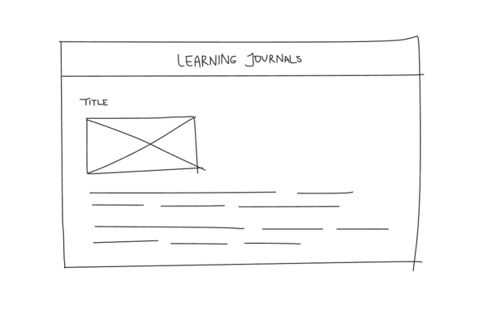

Based on the article, “10 Intriguing Photographs to Teach Close Reading and Visual Thinking Skills,” I thought it was interesting that people are a lot more intrigued by photos that make them question what’s happening. I like the advice stating that practicing regularly asking students questions and moderating their discussions can encourage students to think and look even more for details. Encouraging curiosity and deeper thinking on a regular basis helps people develop long term habits, so I think something as simple as that method helps immensely. Once students develop the habit of consistently asking questions, noticing details, and building on the perspectives of other people, they’ll naturally start applying those skills to other aspects of their lives.
A site that I think uses image and interaction that inspires visual thinking is Vap Studio’s. The way that they incorporate vastly contrasting colors, eye-catching graphics, photography, videography, and interactive animations immediately drew my attention and made me want to look further into who they are and what they do.
Overlays Design Pattern Research
In reading “Best Practices for Modals/Overlays/Dialog Windows,” I liked that it explained all the different ways that designers incorporate the different features displayed within a modal. For example, modals always have an escape hatch, yet I’ve noticed instances, especially on sketchier websites, that escape hatches are a lot less visible and easier to miss. As a result, it causes a panic that can make it feel like you’re about to get a virus on your device. I also think it’s interesting that the article states that modals don’t work well in mobile designs. Since they become too large or too small, bottom sheets tend to be a lot more common. All in all, since modals interrupt user flows, it’s always important to consider how easy they are to digest and how important the information is to show.
Research Form Design

From the "Best practices for form design" reading, I learned that users prefer less cognitive load when looking at form fields. They are more likely to abandon the process of filling out a form if there are too many fields because it feels more time consuming and can oftentimes feel more difficult. They also prefer being able to see the number of steps they'll need to take to complete a form so that they have a clearer idea of when the end point will be.
I like that the article also points out to ask easier questions at the start and to save more complex questions for the end so that users are more likely to stay committed to finishing those forms. I've used this framework when I've created user research surveys in the past and had the same assumption that including more simple questions at the beginning would help people feel more inclined to complete more complex questions saved at the end.
An online form I've used has been creating an account on DoorDash. This form has only 5 fields and is a common format seen on many platforms to create an account, but the fact that they start by asking for your first and last name first and ending with asking for a password creation already feels more quick and reliable. If the form had asked for my phone number or password first, I would've assumed that the site was sketchy and wanted to steal my personal information.